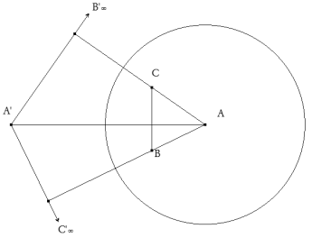

De investigación. Propuesto por José Carlos Chavez Sandoval, estudiante peruano de Matemática Pura en la Universidad Nacional Mayor de San
Marcos
Dado un triangulo ABC, y una cónica, sea A'B'C' el triangulo polar de ABC con respecto a la conica. Demostrar que ABC y A'B'C' estan en perspectiva. Yiu, P. (2001). Introduction to the Geometry of the Triangle,version 2.0402, Summer 2001. http://www.math.fau.edu/yiu/Geometry.html Solución de José María Pedret, Ingeniero Naval. Esplugues de Llobregat (Barcelona). (1 de agosto de 2006) |
|
SEGUNDA SOLUCIÓN |
|
|
 figura 1 Mediante una homología la cónica se transforma en un círculo (ver figura) y uno de los lados de uno de los triángulos en la recta impropia. Si A'B'∞C'∞ es ese triángulo, B'∞C'∞ es la recta impropia, el otro triángulo es ABC, siendo A el centro del círculo (polo de la recta impropia), BC es la polar de A', luego AA' es perpendicular a BC. Por otra parte, C y B son los polos de A'B'∞ y A'C'∞, luego AC y AB son perpendiculares a A'B'∞ y A'C'∞. Se sigue que AA', BB'∞ y CC'∞ son las alturas del triángulo ABC, que se cortan en su ortocentro. Por tanto, ABC y A'B'∞C'∞ son homológicos, luego también lo son los triángulos del enunciado. NOTA Esta solución puede encontrarse en el problema nº 60 de GEOMETRÍA ANALÍTICA Y PROYECTIVA DEL PLANO (2ª edición) de DARIO MARAVALL CASESNOVES. Editorial Dossat. Madrid 1965. |